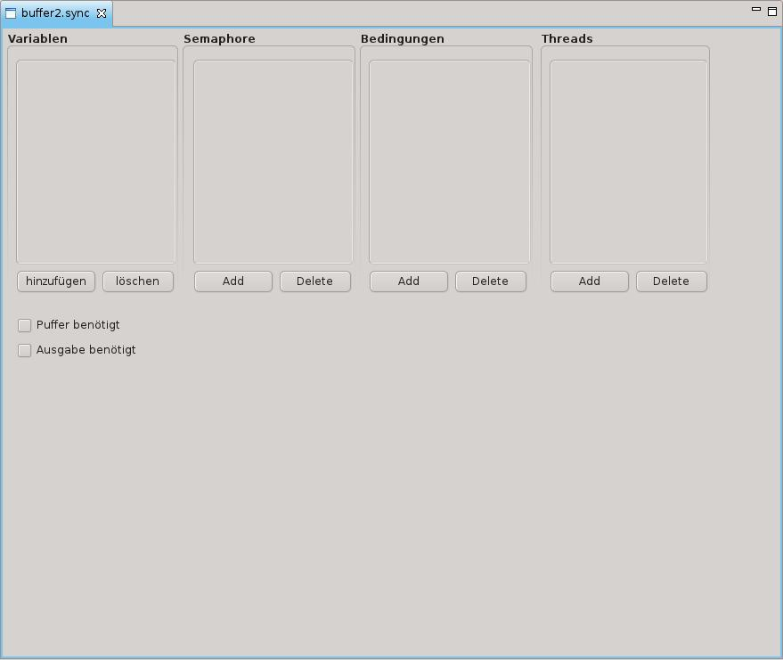
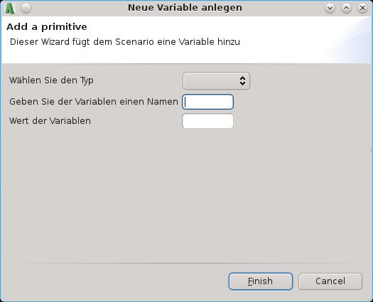
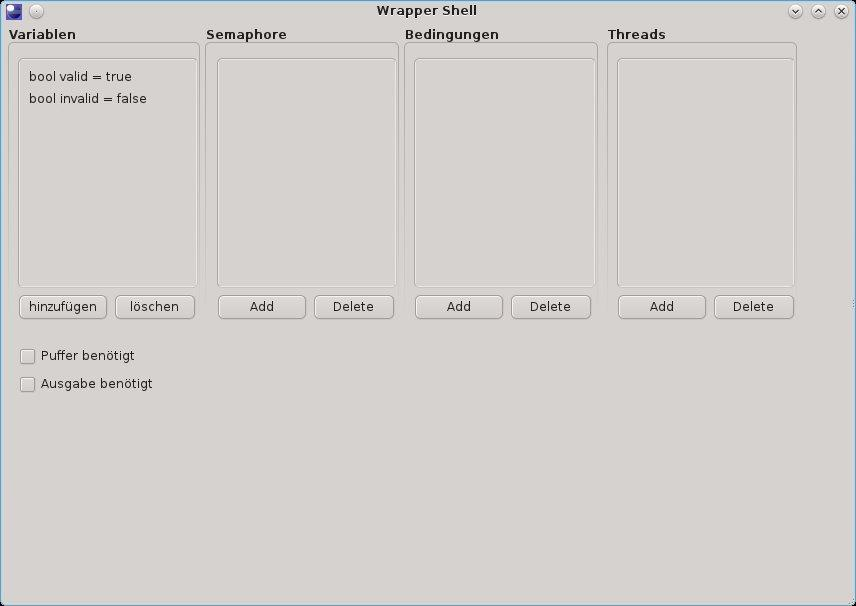

Scenario Editor
The scenario editor allows the user to define a sample on which the run is executed.
Structure of the editor and define an example
If the user creates a new scenario file (an example), it will automatically open the
scenario editor. At the beginning of the scenario it is empty.

Illustration of the empty editor
The editor provides the ability to add various data types by a few clicks through a wizard.
The primitive data type variable (Integer and Boolean), semaphore, condition and thread
are managed in four adjacent fields. By clicking "add" the user can add data types to the
scenario, and he is supported by an assistant.

Wizard to add a primitive variable
After adding one or more variables they are displayed in their areas.

View of the editor after adding variables
By clicking the "delete" button the data types can be deleted from the sample. Clicking
the button opens a dialog that provides a list with multiple selection. Highlight the data
types to be deleted (for multiple selection press CTRL-key) by clicking on the list, then
click on "OK" will delete them. By clicking "cancel" the deletion can still be canceled at
this time.
Bild machen und einfügen
There are also examples that require an ability to output a text or the use of a buffer.
Both can be controlled by the the checkboxes in the lower part. If the checkbox "buffer
needed" is activated, it opens a wizard that prompts the user for the number of places
and then the buffer area in the example made visible. If the buffer is not needed it can be
deleted by unchecking the checkbox. The visualization uses orange label if the space is
occupied, a free space appears in green.
The ability to output requires no further configuration, a simple activating the checkbox
makes the output area visible, unchecking the checkbox makes it invisble.

View of the editor after adding buffer and output